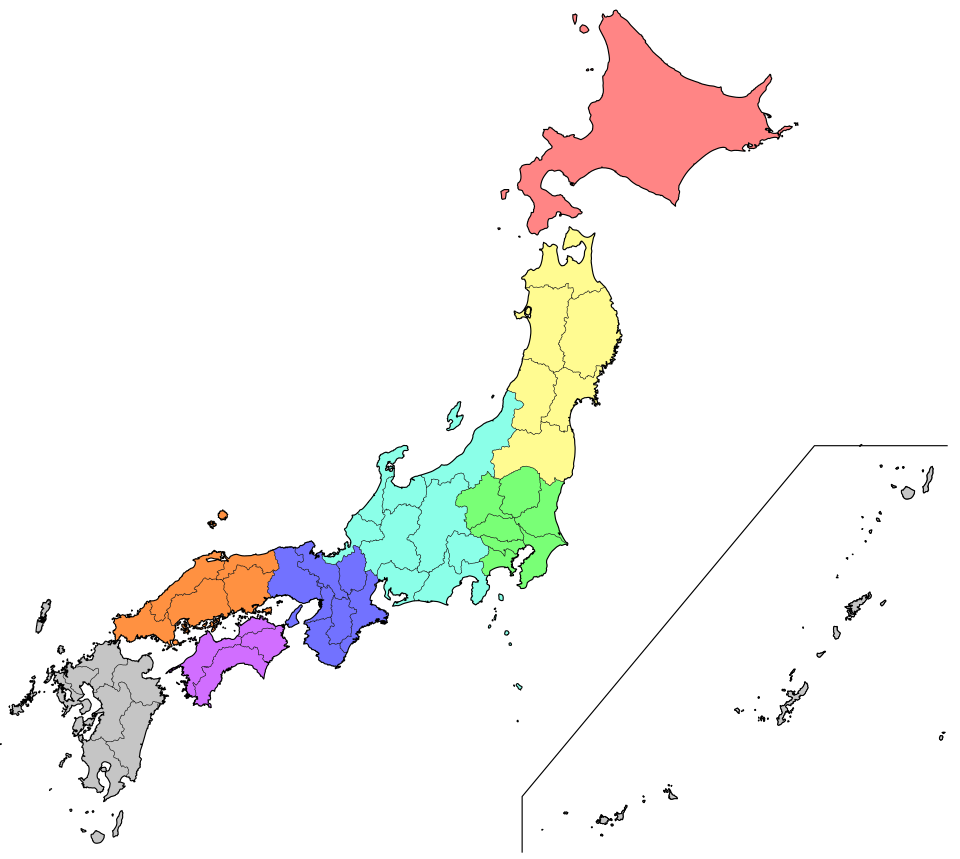

Varieties of KitKat!
The Kit Kat Chocolatory based in Japan, with recipes designed by chef Yasumasa Takagi, opened in 2014, and had expanded to seven branches by 2015. The company claims it has served more than 1 million customers and earned more than 2 billion yen. These shops sell high-end Kit Kat products such as raspberry-infused dark chocolate, orange-chocolate rum, cherry blossom and green tea.
A variety of Takagi's flavors have been introduced as seasonal products, including flavors such as plum, passion fruit, chilli, ginger and kinako soybean powder. In 2016, Nestlé introduced a sake Kit Kat, which combines sake powder with white chocolate.
Some varieties are restricted to a specific region associated with that particular bar. Others are limited-run varieties, with excess supply saved for year-end "happy bag" specials. In 2015, 500 single-finger bitter chocolate bars were sold with gold leaf wrapping for about $16 in high-end retail shops.

- Yūbari melon
- Melon & mascarpone
- Roasted corn
- Cheese & chocolate
- Edamame
- Tokyo Banana
- Exotic Tokyo
- Yokohama cheesecake
- Sugar Butter Tree
- Shinshu apple
- Hot Japanese chili
- Kobe pudding
- Uji matcha
- Hōjicha
- Muscat of Alexandria
- Yuzu
- Okinawa sweet potato
- Beni imo
- Shikuwasa
Hover over a pin to see the Kit Kats named after that region.
The flavor wall
More flavors listed in the article, from A to Z:
- Apple
- Amazake
- Bakeable custard
- Baked potato
- Banana
- Black tea
- Blueberry cheesecake
- Brown sugar syrup
- Butter
- Café au lait
- Cantaloupe
- Cappuccino
- Caramel macchiato McFlurry
- Cherry
- Cherry blossom green tea latte
- Cherry blossom mochi
- Chestnut
- Chocobanana
- Cinnamon cookie
- Citrus golden blend
- Corn
- Cough Drop
- Crème brûlée
- Double cookie
- Edamame
- European cheese
- Exotic Tokyo
- Fruit parfait
- Ginger ale
- Golden citrus
- Green bean
- Hōjicha
- Hokkaido cheese and chocolate
- Hokkaido melon with mascarpone cheese
- Hokkaido roasted corn
- Hot Japanese chili
- Kinako
- Kobe pudding
- Kuchidoke kakao
- Lemon cheesecake
- Maple
- Melon and cheese
- Miso soup
- Muscat of Alexandria
- Okinawa sweet potato
- Oreo ice cream
- Pear
- Pineapple
- Pumpkin
- Ramune soda
- Raspberry passionfruit
- Red potato
- Rilakkuma hotcake
- Rock salt
- Royal milk tea
- Ruby chocolate
- Sake
- Sakura and Soybean Powder
- Salt and caramel
- Shikuwasa
- Shinshu apple
- Soy flour
- Soy sauce
- Strawberry
- Strawberry cheesecake
- Sugar Butter Tree
- Sweet pudding
- Tokyo Banana
- Triple berry swirl
- Vegetable juice
- Wasabi
- Watermelon
- Yokohama cheesecake
- Yūbari melon
- Yuzu